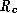

Common Lisp the Language, 2nd Edition

This example determines a class precedence list for the
class pie. The following classes are defined:
(defclass pie (apple cinnamon) ()) (defclass apple (fruit) ()) (defclass cinnamon (spice) ()) (defclass fruit (food) ()) (defclass spice (food) ()) (defclass food () ())
The set S = {pie, apple, cinnamon, fruit, spice, food, standard-object, t}. The set R = {(pie, apple), (apple, cinnamon), (cinnamon, standard-object), (apple, fruit), (fruit, standard-object), (cinnamon, spice), (spice, standard-object), (fruit, food), (food, standard-object), (spice, food), (standard-object, t)}
[The original CLOS specification [5,6] contained a minor error in this example: the pairs (cinnamon, standard-object), (fruit, standard-object), and (spice, standard-object) were inadvertently omitted from R in the preceding paragraph. It is important to understand that defclass implicitly appends the class standard-object to the list of superclasses when the metaclass is standard-class (the normal situation), in order to insure that standard-object will be a superclass of every instance of standard-class except standard-object itself (see section 28.1.2).  is then generated from this augmented list of superclasses; this is where the extra pairs come from. I have corrected the example by adding these pairs as appropriate throughout the example. The final result, the class precedence list for pie, is unchanged.-GLS]
The class pie is not preceded by anything, so it comes first;
the result so far is (pie). Remove pie from S and pairs
mentioning pie from R to get
S = {apple, cinnamon, fruit, spice, food, standard-object, t}
and R = {(apple, cinnamon), (cinnamon, standard-object),
(apple, fruit), (fruit, standard-object), (cinnamon, spice), (spice,
standard-object), (fruit, food), (food, standard-object), (spice,
food), (standard-object, t)}.
The class apple is not preceded by anything, so it is next; the
result is (pie apple). Removing apple and the relevant
pairs results in
S = {cinnamon, fruit, spice, food, standard-object, t}
and R = {(cinnamon, standard-object), (fruit,
standard-object), (cinnamon, spice), (spice, standard-object), (fruit,
food), (food, standard-object), (spice, food), (standard-object, t)}.
The classes cinnamon and fruit are not preceded by
anything, so the one with a direct subclass rightmost in the class
precedence list computed so far goes next. The class apple is a
direct subclass of fruit, and the class pie is a direct
subclass of cinnamon. Because apple appears to the right
of pie in the precedence list, fruit goes next, and the
result so far is (pie apple fruit).
S = {cinnamon, spice, food, standard-object, t}
and R = {(cinnamon, standard-object), (cinnamon, spice), (spice, standard-object), (food, standard-object), (spice, food), (standard-object, t)}.
The class cinnamon is next, giving the result so far as
(pie apple fruit cinnamon). At this point
S = {spice, food, standard-object, t}
and R = {(spice, standard-object), (food, standard-object), (spice, food), (standard-object, t)}.
The classes spice, food, standard-object, and t are then added in that order, and the final class precedence list for pie is
(pie apple fruit cinnamon spice food standard-object t)
It is possible to write a set of class definitions that cannot be ordered. For example:
(defclass new-class (fruit apple) ()) (defclass apple (fruit) ())
The class fruit must precede apple because the local ordering of superclasses must be preserved. The class apple must precede fruit because a class always precedes its own superclasses. When this situation occurs, an error is signaled when the system tries to compute the class precedence list.
The following might appear to be a conflicting set of definitions:
(defclass pie (apple cinnamon) ()) (defclass pastry (cinnamon apple) ()) (defclass apple () ()) (defclass cinnamon () ())
The class precedence list for pie is
(pie apple cinnamon standard-object t)
The class precedence list for pastry is
(pastry cinnamon apple standard-object t)
It is not a problem for apple to precede cinnamon in the
ordering of the superclasses of pie but not in the ordering for
pastry. However, it is not possible to build a new class that
has both pie and pastry as superclasses.